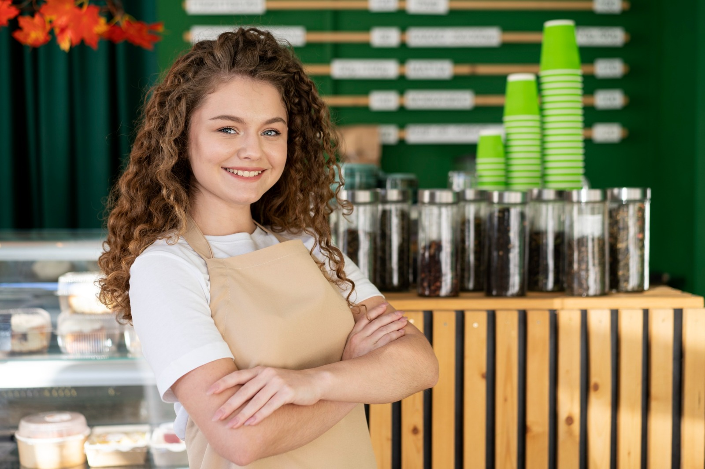

Un viaje que comenzó en las montañas
Todo empezó cuando nuestro fundadora, Briyit, decidió dejar su trabajo en la ciudad para viajar por Latinoamérica buscando los mejores granos de café.
En cada parada —desde las montañas de Colombia hasta las tierras altas de Etiopía— descubrió que el café era mucho más que una bebida: era conexión, cultura y tradición.
El viaje continúa aquí..

NUESTRA ESENCIA
Lo que nos define
Pasión por la calidad
Cada taza es preparada con dedicación extrema. Seleccionamos cada grano y perfeccionamos cada preparación.
Comunidad
Más que una cafetería, somos un espacio donde las personas se encuentran, comparten y crean recuerdos.
Innovación respetuosa
Experimentamos con nuevos sabores y técnicas, siempre respetando las tradiciones del café de specialty.
HOY EN BRUMA
Más de 50.000 tazas después
Lo que comenzó como un sueño en una pequeña esquina, hoy es el lugar donde la ciudad viene a detenerse.
Hemos recibido a artistas, escritores y emprendedores. Cada uno ha dejado algo especial aquí.
Años operando
Clientes felices
Variedades